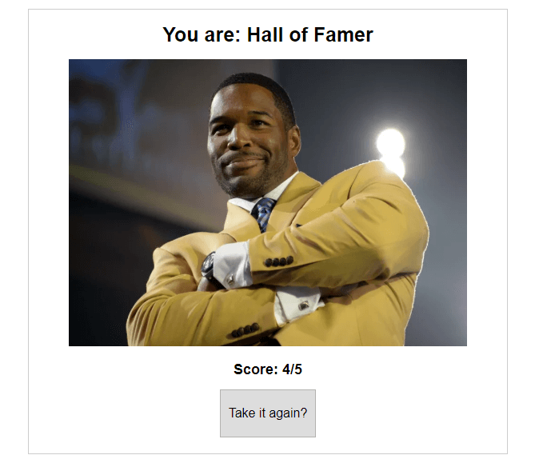

Geordie Connell
Hi, I'm Geordie! My real name is George Washington Connell but there were so many Georges in my family so my parents gave me a nickname.
About Me:
I am currently in a student in the Engineering Immersion Boot Camp at Thinkful. I love programming because I love the incredible feeling when my code comes to life on screen. The ever-expanding number libraries and systems to learn satisfies my constant desire to continue learning.
I have a BS in Statistics from Lehigh University and have previous experiences in the financial services industry working in client relations and sales. If you're looking for an articulate analytical mind, send me an email!
When I’m not programming, I’m using either playing, watching, or talking about sports. I play in a number of intermural sports leagues in Philadelphia as well as at least one round of golf on weekends. I also host a podcast called the Bullpen Cart where my friends and I talk baseball, football, hockey, and plenty of other sports. Nothing makes me happier than watching the Phillies at Citizens Bank Park on a warm summer night with a cold beer in my hands.
Projects:
Sports Trivia Quiz
If you couldn’t tell from my bio, I’m a big sports fan. With that fandom, comes a lot of random knowledge so we decided to put some of it to good use! We used JQuery to render each of our questions and answers as well as a conditional results screen that loads different statuses depending on your score. The app has eight questions in its question bank and will randomly select five for the user to answer.
Can you reach Hall of Fame status like Michael Strahan? Try the quiz for yourself!
Built Using: HTML5, CSS, JQuery
Contact Info:
Email: geordie.connell@gmail.com
Github: @geordo9